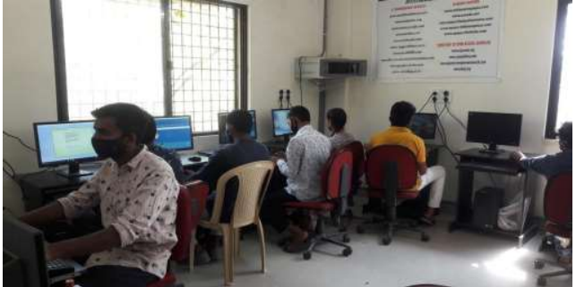
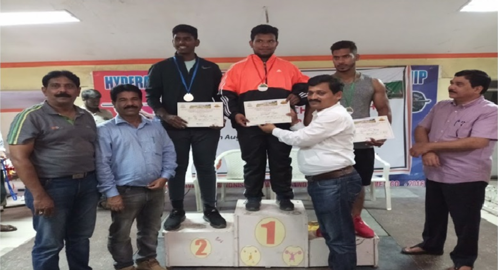

Babu Jagjivan Ram Government Degree College Library plays a vital role in the search of knowledge. It is the hub of college education around which all academic activities revolve. The aim of the Library is providing necessary information services to all the students and staff. It supports the teaching learning activity in the college and also provides the students updated knowledge and to ensure the optimum utilization of the available resources.


The National Digital library of India is a project under the Ministry of Human Resource Development, India. It is a repository that integrates contents from different Indian Institutional Repositories and disseminates them to its members.16 Computers are providing E- resource facilities for users.

The Department of Physical Education was established in the year 1974. The Department is firmly committed to provide good opportunities to the students in Sports. The Department believes in the holistic development of the students by focusing on the development of mind, body and spirit. It consists of adequate indoor facilities for Games and Sports. Indoor Games like Carroms, Chess ,Table Tennis, Yoga and Eight multi station Gymnasium for men and Fitness equipment for women are also available.

Our college computer lab is a modern, well‑maintained learning hub equipped with high‑performance PCs, up‑to‑date software, and reliable high‑speed internet. Spacious workstations, collaborative seating, and projection facilities support both individual study and group projects, while trained staff ensure smooth operation and technical support